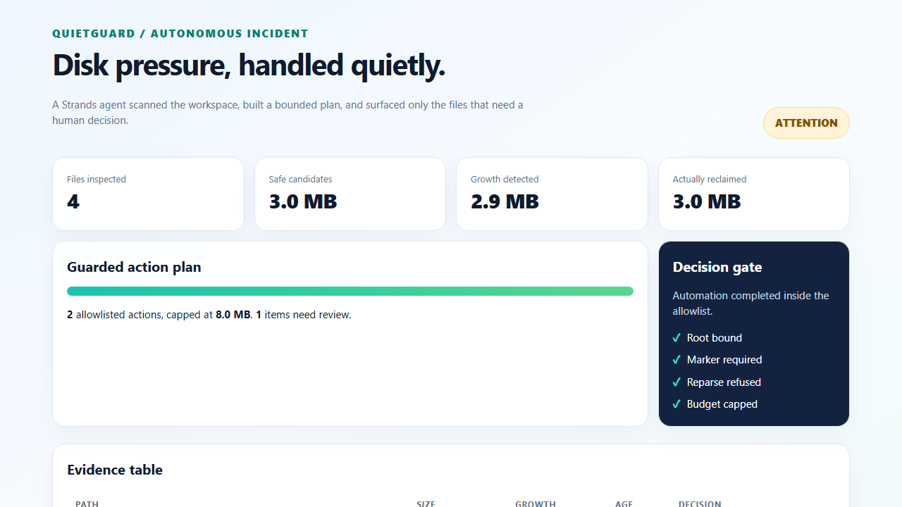
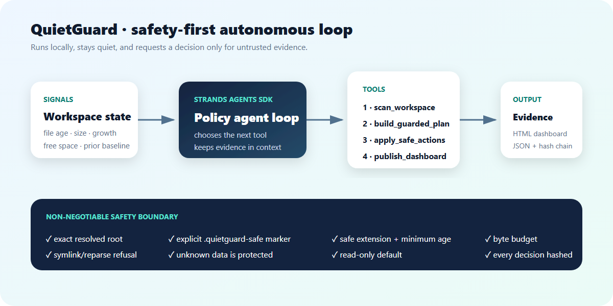

Scan
Walk the exact configured root, refuse links and reparse points, and compare files with the previous baseline.
QuietGuard detects runaway diagnostic logs, makes a bounded cleanup plan, and acts only inside explicit safety boundaries. Uncertain evidence reaches a human with context.
Open source · MIT licensed · deterministic offline demo · no cloud account required
The demo creates a contained log storm, runs the real Strands tool loop, applies guarded actions, and publishes the evidence. Captions explain every decision.
A real strands.Agent coordinates four narrow tools. Each step leaves a durable artifact that can be reviewed or replayed.
Walk the exact configured root, refuse links and reparse points, and compare files with the previous baseline.
Classify evidence by marker, extension, age, and risk. Fit safe candidates inside the cycle budget.
Revalidate every boundary immediately before deletion. A changed or uncertain file is skipped.
Write the dashboard, machine-readable incident report, and tamper-evident audit chain.

QuietGuard removes known regenerable noise and refuses to guess about user data.
.quietguard-safe marker is required below the exact configured root..log, .tmp, .trace, and .dmp files qualify.The included deterministic Strands model makes the full demo private and free to run. A production deployment can swap in any Strands-supported model without changing the filesystem guardrails.

Python 3.10+ is enough. The demo creates its own synthetic workspace and never touches your files.
git clone https://github.com/PionneerZ/quietguard-agent.git cd quietguard-agent python -m pip install -e . quietguard demo